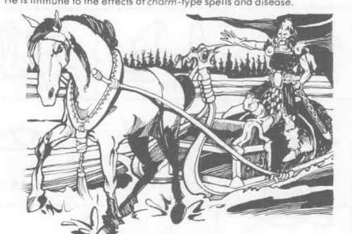

勒明盖宁、伊尔玛利宁与洛希 · Lemminkainen、Ilmarinen 与 Louhi
Lemminkainen 是强大的英雄与冒险者，擅长刀剑、吟唱和变形；Ilmarinen 是神匠英雄，能够锻造魔法武器与奇械。Louhi 是 Pohjola 的老女巫，掌握诅咒、变形与寒冷魔法；Mielikki 统治森林与野兽，保护在荒野中遵守誓言的人。死者由 Tuonetar 管理，失眠、梦境和恶意预言则常与 Untamo 的领域相连。

Lemminkainen 是强大的英雄与冒险者，擅长刀剑、吟唱和变形；Ilmarinen 是神匠英雄，能够锻造魔法武器与奇械。Louhi 是 Pohjola 的老女巫，掌握诅咒、变形与寒冷魔法；Mielikki 统治森林与野兽，保护在荒野中遵守誓言的人。死者由 Tuonetar 管理，失眠、梦境和恶意预言则常与 Untamo 的领域相连。
